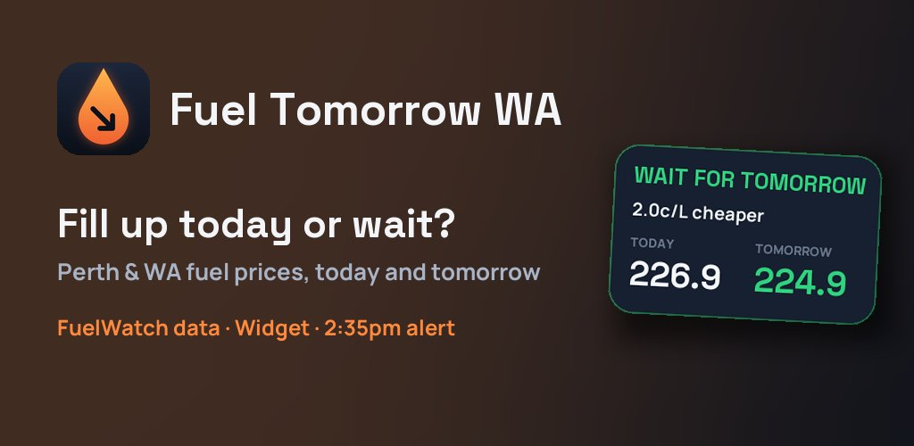

Fuel Tomorrow WA · Android app
Fill up today, or wait for tomorrow?
SILLAPPS
In Western Australia every servo's price is fixed for 24 hours from 6am, and tomorrow's prices are published after 2:30pm. Fuel Tomorrow WA compares today and tomorrow for your suburb and your fuel, and gives you a straight answer. Free, no ads, no account.
- Today and tomorrow, side by side
- Perth and regional WA
- ULP, 95, 98, diesel, LPG, E85
- No ads, ever
How WA fuel prices work
| By 2pm | Every station tells FuelWatch its price for tomorrow. |
|---|---|
| After 2:30pm | FuelWatch publishes tomorrow's prices. Fuel Tomorrow WA compares them with today's. |
| 6am | The new prices start, fixed for 24 hours. Until then you pay yesterday's. |
Perth prices follow a weekly cycle. From the cheapest day to the dearest the jump is often more than 10 cents a litre, about $5 on a 50 L tank. Knowing tomorrow's price today is the whole trick.
What the app tells you

- Wait: tomorrow is cheaper, and where.
- Fill up today: tomorrow is dearer (before 6am: "fill up before 6am").
- Same: within 1c/L, and what most servos around you do.
- Before 2:30pm: how today compares with yesterday, and when tomorrow's prices are due.
- The list of servos with price, change, opening hours and distance; a map; directions.
Fuel Tomorrow Pro (one-time purchase, 7-day free trial): home screen widget, an alert around 2:35pm, favourite stations, several suburbs.
Questions
What time are tomorrow's fuel prices out in WA?
Every station tells FuelWatch its price for the next day by 2pm, and FuelWatch publishes tomorrow's prices after 2:30pm (Perth time). They apply from 6am the next morning.
Can a servo change its price during the day?
No. Each station's price is fixed for 24 hours, from 6am to 6am. Between midnight and 6am you still pay the previous day's price.
Is Tuesday still the cheapest day in Perth?
Often, but not always: the weekly cycle shifts from time to time. Since tomorrow's prices are published in advance, comparing the real prices beats guessing the day.
Is it free? Does it have ads?
Free, with no ads, no account and no tracking. Pro is a single payment; there is no subscription.
Is it an official FuelWatch app?
No. Fuel Tomorrow WA is an independent app by Sillapps. It shows prices published by FuelWatch (Government of Western Australia) and is not affiliated with FuelWatch or the Government of Western Australia.
Source and privacy
Price data: FuelWatch, Government of Western Australia. Prices are for information only: always check the price at the pump. The app keeps your settings on your phone and sends nothing to the developer.